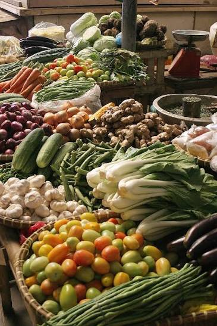

Vegetables are the edible parts of plants used in culinary applications, encompassing various vegetative structures including leaves, roots, stems, tubers, bulbs, and flower buds. Unlike fruits, which develop strictly from the fertilized ovary of a flower and contain seeds, vegetables are defined primarily by their savory culinary use and can come from almost any part of the plant. They are systematically categorized by the structural part consumed: leafy greens like spinach and kale supply concentrated iron and fiber; root crops like carrots and radishes anchor the plant while accumulating vital nutrients; and underground storage units like potatoes (tubers) and onions (bulbs) store carbohydrates. From a nutritional standpoint, vegetables are essential dietary staples because they are low in calories and lipids but exceptionally high in essential micronutrients like Vitamin A, Vitamin K, and folate. While many vegetables lose heat-sensitive vitamins when cooked, others—such as carrots and tomatoes—actually unlock more bioavailable antioxidants like beta-carotene and lycopene when exposed to heat and paired with a dietary fat.